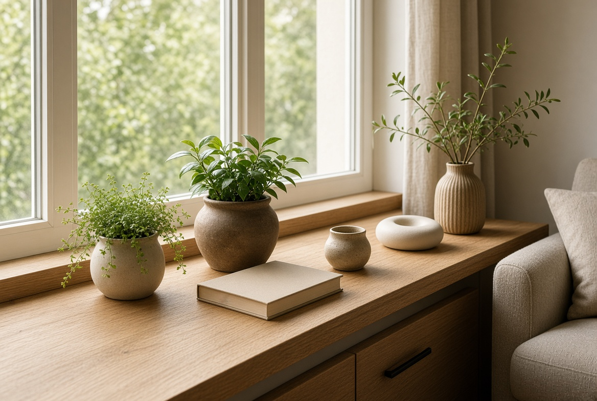
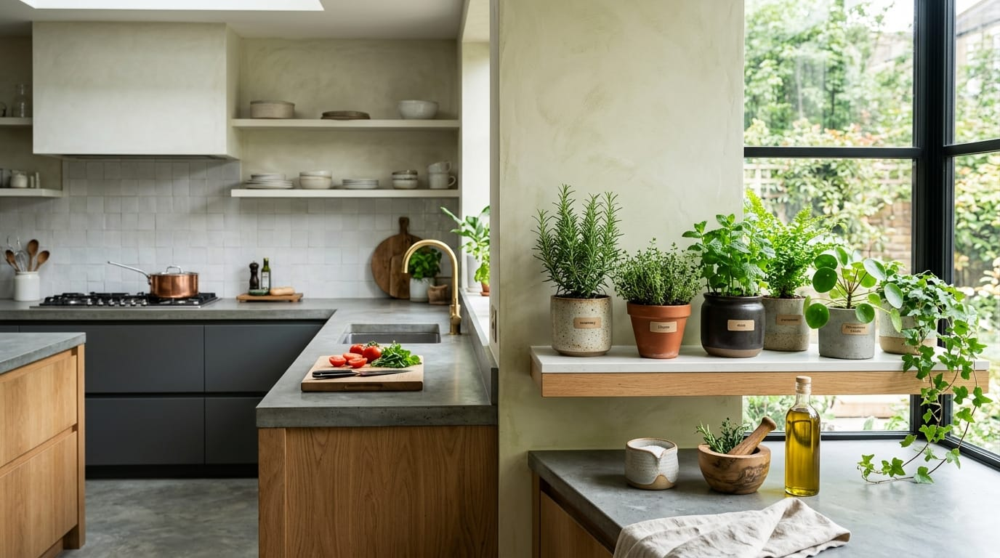

How to Prepare a Garden for Spring
Practical Home & Garden guide: How to Prepare a Garden for Spring. Clear steps, useful tips, common mistakes to avoid, and maintenance advice.
Read Article →Guides to choose, care for, and use indoor plants in decorative and practical ways.

Practical Home & Garden guide: How to Prepare a Garden for Spring. Clear steps, useful tips, common mistakes to avoid, and maintenance advice.
Read Article →
Practical Home & Garden guide: How to Choose Curtains for Every Room in Your Home. Clear steps, useful tips, common mistakes to avoid, and maintenance advice.
Read Article →
Practical Home & Garden guide: How to Clean and Care for Indoor Plants Correctly. Clear steps, useful tips, common mistakes to avoid, and maintenance advice.
Read Article →